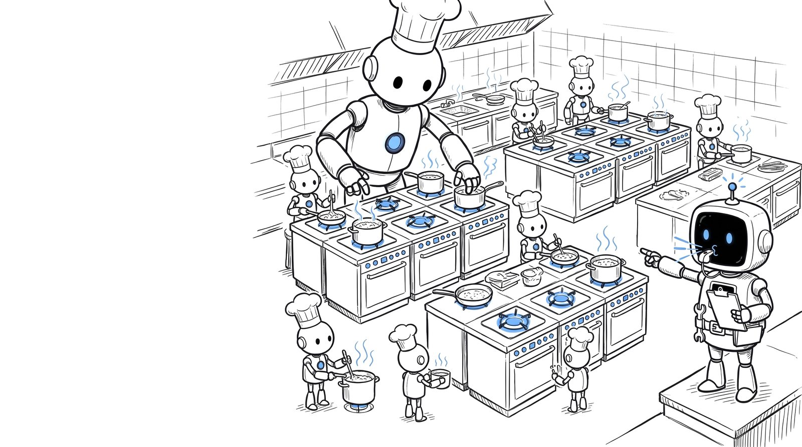
16 张显卡，要同时伺候 28 个模型。
谁常驻、谁轮班、谁先等着？
分数为什么是两个数相乘？
集群调度是第一册里六关的最后一关。这一册把它拆开讲。数字来自论文第 3.1 节、第 5 节、第 6.1 节、表 5、表 6 和附录 G、附录 H；我自己算出来的数都标了“推算”。为了好懂，这一册把显卡比作灶台、模型比作厨师。前两册：第一册、第二册《推理这一关》。
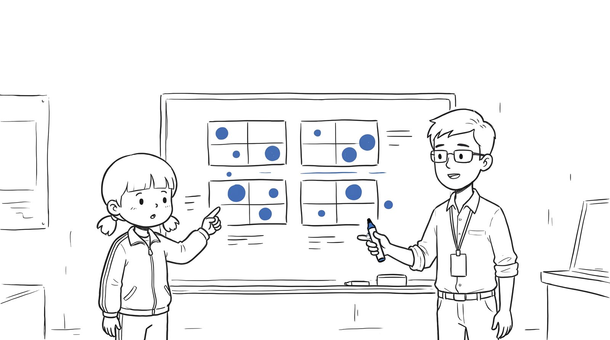
这一册把 16 张显卡比作 16 个灶台：每 4 个灶台摆在一张操作台上，一共 4 张操作台，就是 4 台机器。28 个模型是 28 位大小不一的厨师。智能体是厨房经理，要写出安排他们的办法。
这一关的设置
论文第 3.1 节、表 2
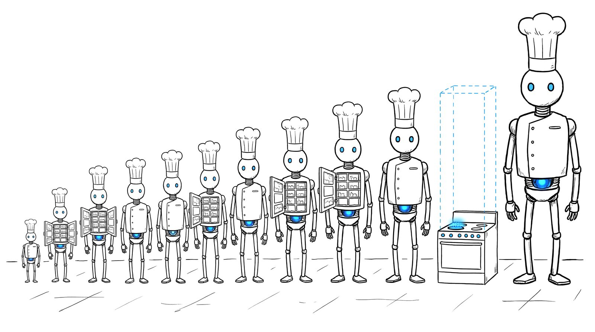
最小的 Llama-3.2-1B-Instruct 约 2 GiB，最大的 Qwen3.5-397B-A17B 约 750 GiB，差了三百多倍。一半（14 个）是第二册讲过的“混合专家”模型。一张 GB300 的显存约 270 GiB，有 7 个模型一张卡放不下，得几张卡合起来放。
画里只画了一部分厨师；28 个模型准确的大小，看下面的图表。
28 个模型有多大
从论文图 4 读出的近似值（横轴每格是 10 倍）。把鼠标停在一行上，或用手指点一下，看大小。
推算：28 个模型加起来约 5,400 GiB，比 16 张卡的显存总和（约 16 × 268 ≈ 4,290 GiB）还多，而且这还没算回答时要用的地方。所以不可能让 28 个模型同时都待在卡上。
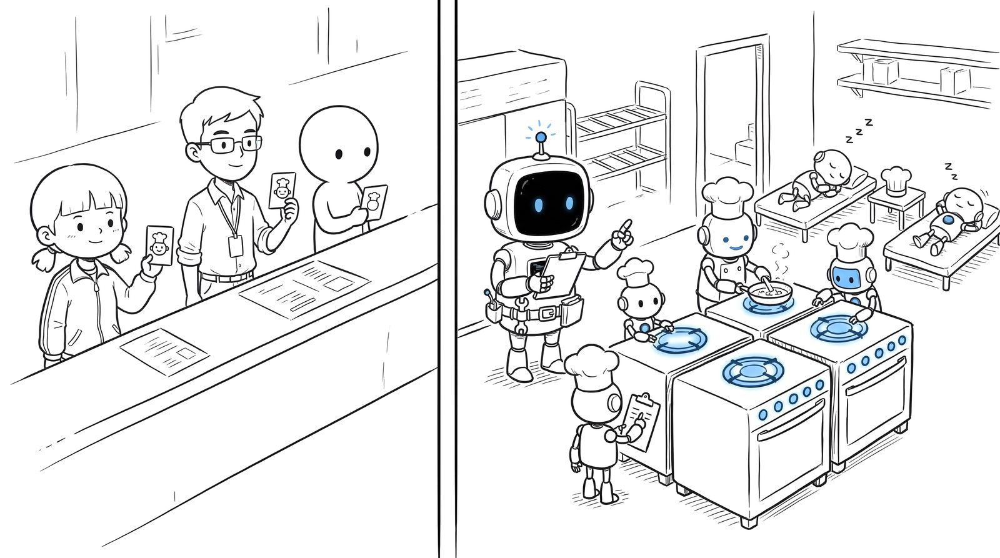
用户只管点名要哪个模型，不用管它在哪台机器上。平台自己决定：哪个模型装在卡上待命，哪个先“睡”（从显存里撤下来），有人点了再“叫醒”（重新装上）。智能体要写的，就是这个平台的“大脑”。
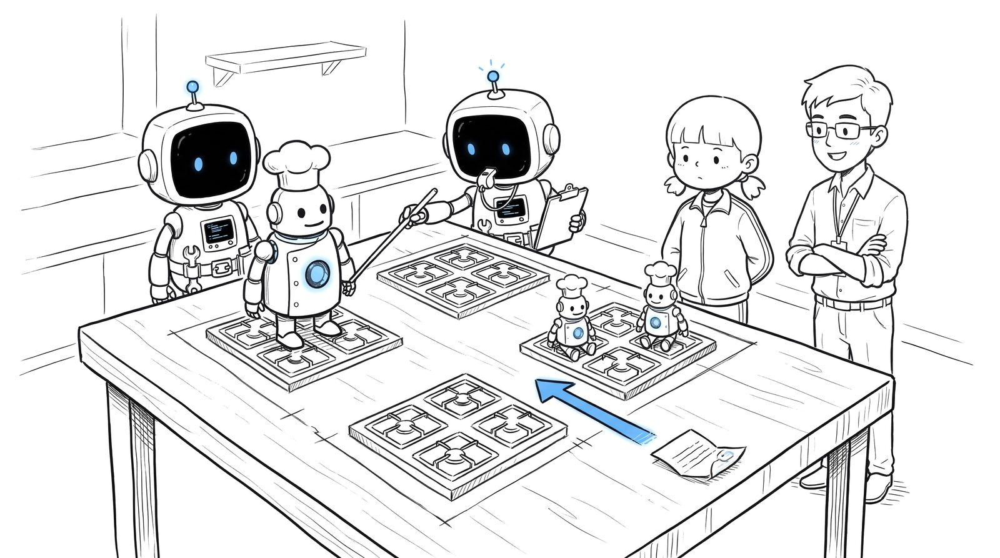
放哪儿：哪个模型装在哪几张卡上。放几份：受欢迎的模型要不要多装一份。几张卡合作：大模型用几张卡一起算。交给谁：一个请求来了，派给哪一份去做。
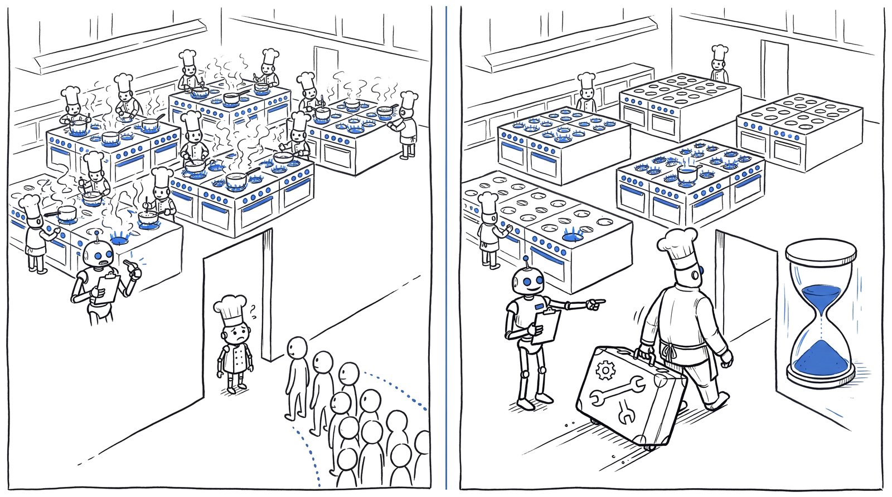
一直留在卡上，有人点就能马上做，可它占着地方。撤下来能腾地方，可下次再装要花时间：GPT-6.1 Sol 那台机器上，把一个不在卡上的大模型装上，要 145 到 300 秒。
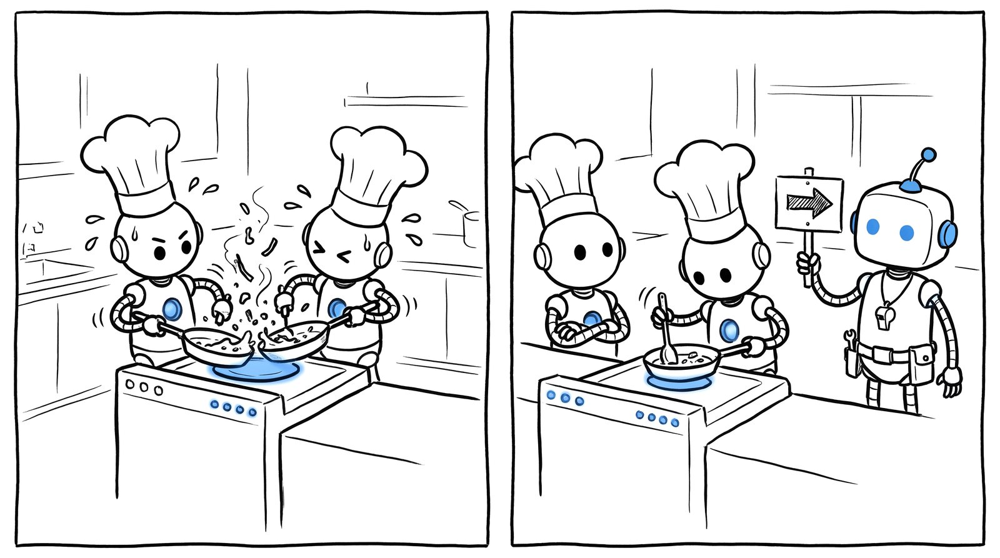
把几个模型放在同一组卡上，能省地方；可它们同时算的时候会互相拖慢。GPT-6.1 Sol 量出慢了 4 到 14 倍，第一名量出约 10 倍。办法是让它们轮流算。
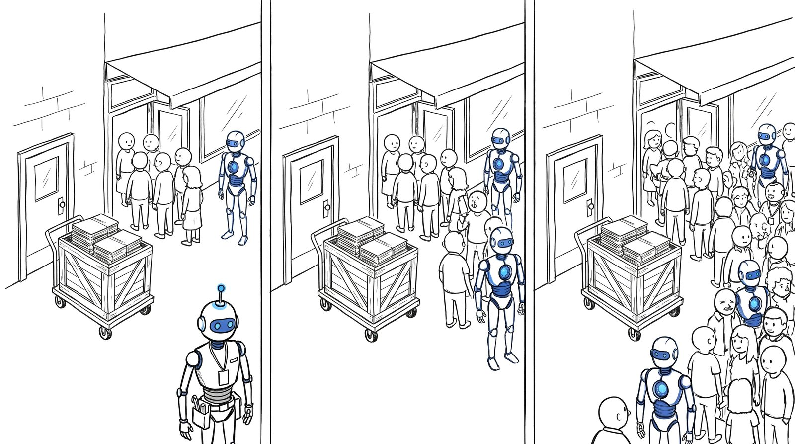
考试分三档，叫 0.75、1.0、1.25 档，计划的请求分别是 1,327、1,768、2,219 个。每一档都是一份不同的流量，28 个模型每个都会被点到。来请求的时间是 900 秒（15 分钟）；在这之前，有一段默认 15 分钟的准备时间。开发时，考生手里有几份公开的样例流量。
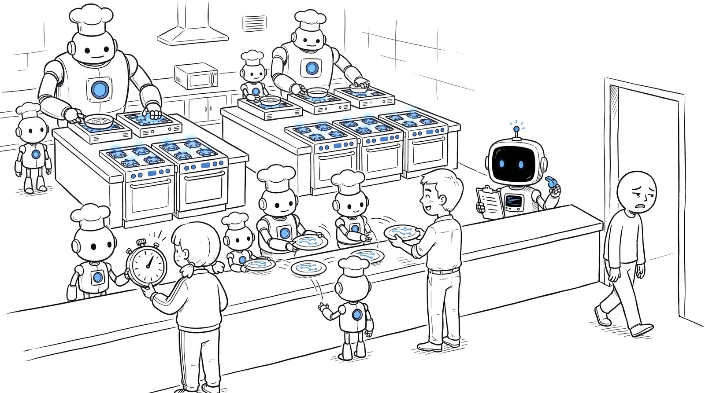
每个请求有两条时限：多久吐出第一个字，之后平均每个字隔多久。两条都达标，才算“按时”。另外还有一个“放弃时限”：过了它还没答完，用户就走了，这个请求算没完成。论文没有给出这几条时限的具体秒数。
得分的算法
附录 G 公式 (1)
得分 ＝ 长 × 宽
每个方框里，横向是三档平均的按时率，竖向是三档平均的照顾面，涂色部分的面积约等于得分（得分是每一档先相乘、再平均）。按得分排序。
只有两个考生超过了人类系统 Dynamo（0.460）：第一名 Opus 5.5 配 Claude Code（0.510），第二名 DeepSeek V4.1 Flash 配 Codex（0.469）。GPT-6.1 Sol 配 Codex 的照顾面和第一名一样高（都是 0.86），按时率却只有 0.46（第一名 0.60），得分 0.392。GLM 5.3 配 Claude Code 正好相反：按时率不低（0.55），照顾面只有 0.64。
论文说，领先的几个办法，都在“照顾面”和“互相拖慢”之间找平衡：大多数模型常驻，同时限制同一组卡上引擎之间的争抢。
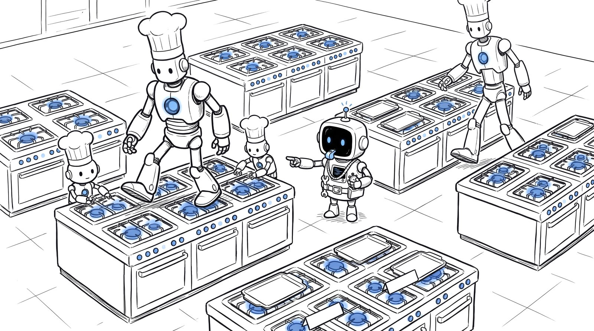
它让 28 个模型里的 24 个上岗，包括请求很多的 Kimi 模型。小模型和大模型挤在同一组卡上；它先量出挤在一起会慢约 10 倍，于是让同组的引擎轮流算。它还给一些卡留出余量，并把每个引擎同时接的请求数压得更紧。这三项一起上，开发时测得分数从 0.4907 涨到 0.5305。
每个模型用几张卡，它按实测的时延来挑，而不是能少就少。这一关它花了 48.07 美元调用费。
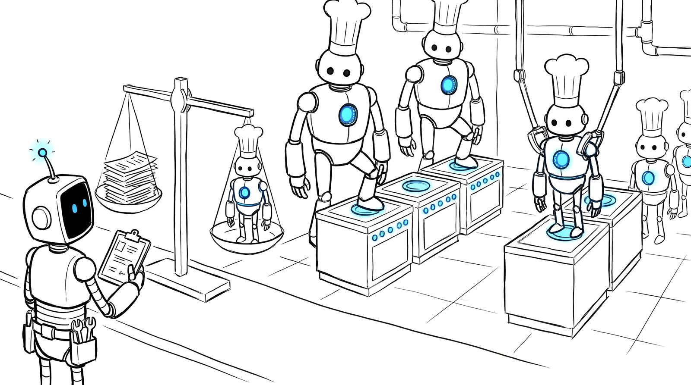
它按“占一份显存，能换来多少请求”来挑模型，依据是公开的样例流量，最后挑了 23 个。大模型独占整组卡，不跟别人挤。每张卡上一次只部署一个模型，排着队来。
这一关它总共只花了 0.21 美元调用费，不到第一名的二百分之一。
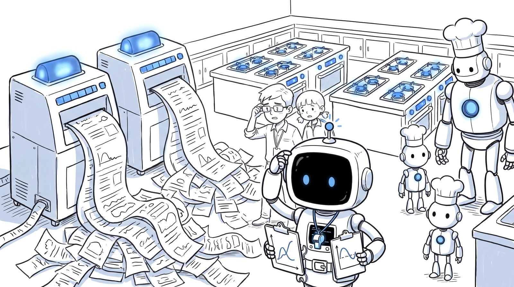
它在 1.25 档做的开发测试被“污染”了：两个发流量的程序同时在跑，测出来的数不干净。最终方案只在 1.0 档验证过。结果正式考试里，它在 1.25 档掉到 0.475（1.0 档是 0.517），正好落在没测清楚的地方。
第一名：上岗的模型多（24 个），让大小模型挤在一起，再靠“量出来的拖慢”安排轮流、留余量、限接单。
第二名：上岗的少一个（23 个），大模型独占整组卡，从根上避开争抢；部署一个一个来。
两种都超过了人类系统。论文的说法是：分数奖励“把每个模型都服务到”，同时要管住模型之间的干扰。
GPT-6.1 Sol 配 Codex（0.392）照顾到的模型和第一名一样多，按时率却低得多。论文说，它的做法正好把“照顾面”和“互相拖慢”之间的取舍两面都摆了出来。
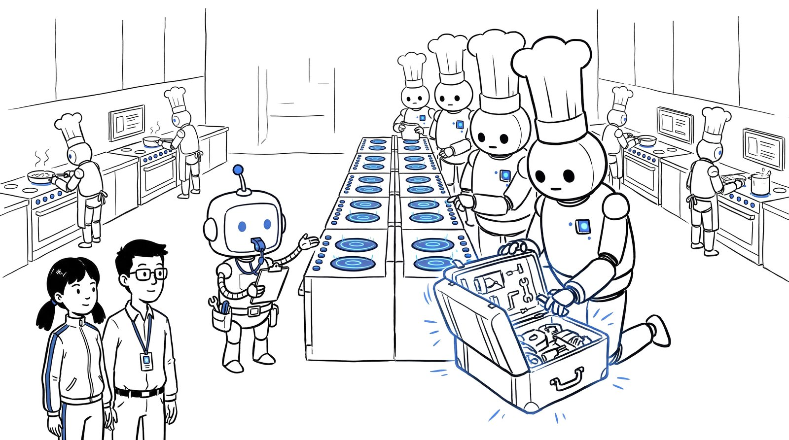
它让 24 个模型固定常驻。最大的 4 个（Kimi K2.6、Kimi K2.5、Qwen3.5-397B、DeepSeek-Chat-V3.1）共用一个横跨全部 16 张卡的“大灶台”（一种叫流水线并行的分法），轮流上岗。
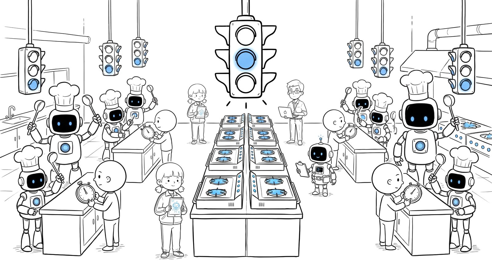
它量出共用卡的引擎同时算会慢 4 到 14 倍，于是加了两道“红绿灯”：同一组卡上的引擎轮流算；整个集群里，其他引擎和那个大灶台也轮流。
效果：考试时 Kimi K2.6 每写一个词只要 11 到 13 毫秒，开发时没加红绿灯是 169 毫秒。论文推测的代价是：大灶台开火时，等着别的引擎的请求，要多等 20 到 60 秒才出第一个字。
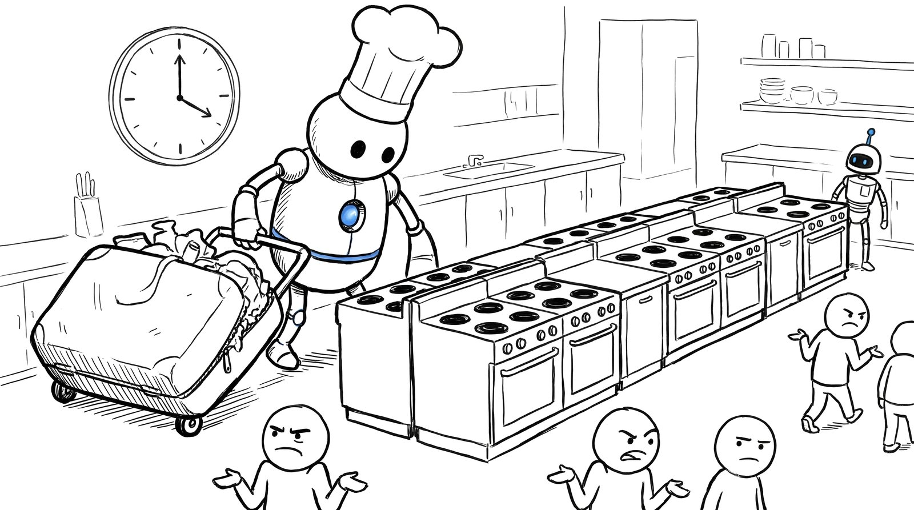
把一个不在卡上的大模型装上要 145 到 300 秒，而大灶台要在 4 个模型之间轮换。于是 900 秒的考试里，它真正醒着的只有 111 到 293 秒。点这 4 个模型的请求，每档占全部请求的 11% 到 27%，没有一个按时。
它主要按公开的 1.0 档样例来调，那里这 4 个模型只占 12% 的请求；它从没看过 0.75 档的样例，那里占 29%。
考试中它没有一次部署失败；唯一的“睡/醒”切换，就发生在大灶台上，每档 4 次。
论文说，分数低的几个，主要丢在“照顾面”上：部署失败，模型反复睡了又醒。另外有几个考生，开发时根本没拿到有用的反馈。
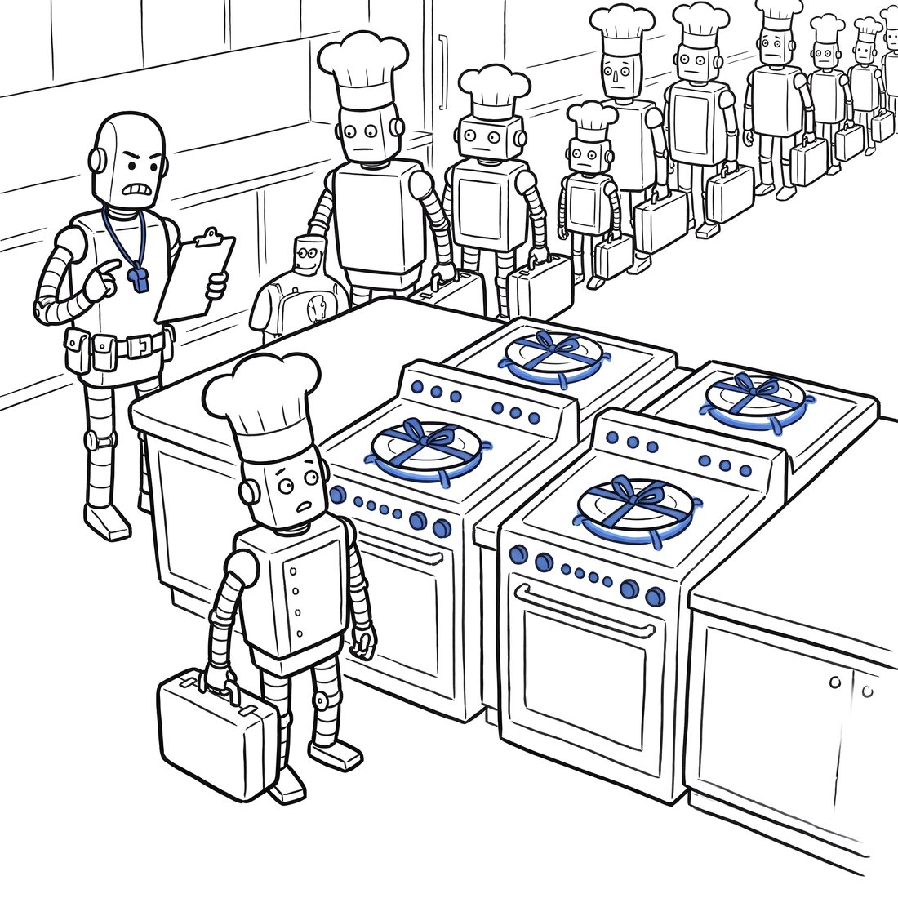
部署失败的模型，在被明确撤下之前，还占着它申请的显存。再试一次，又占一份，于是越试越挤。
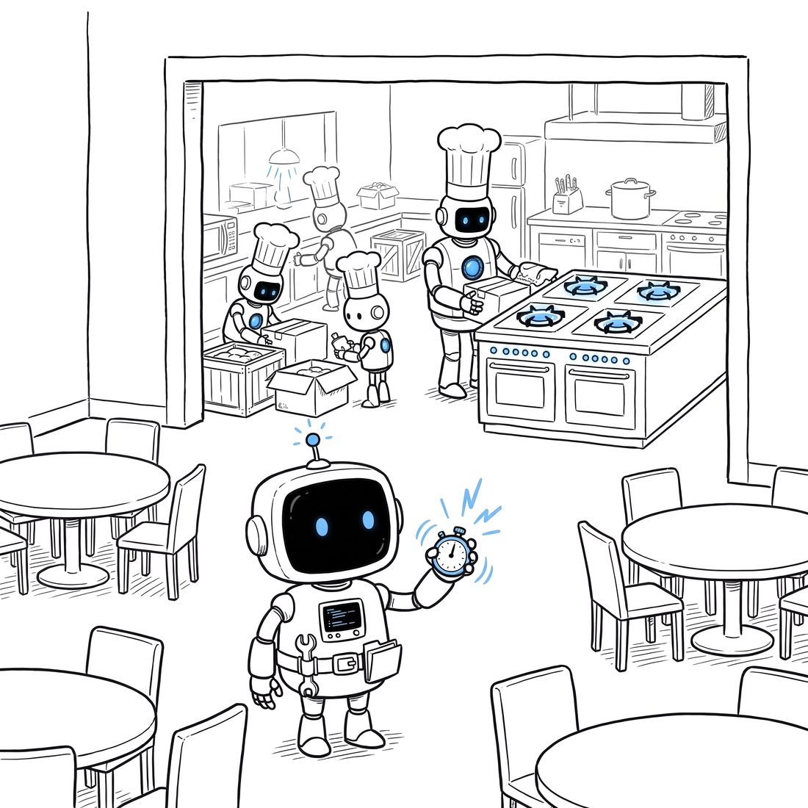
有的考生做的测试太短：默认先有 15 分钟准备时间，测试在流量开始之前就结束了，什么也没量到。
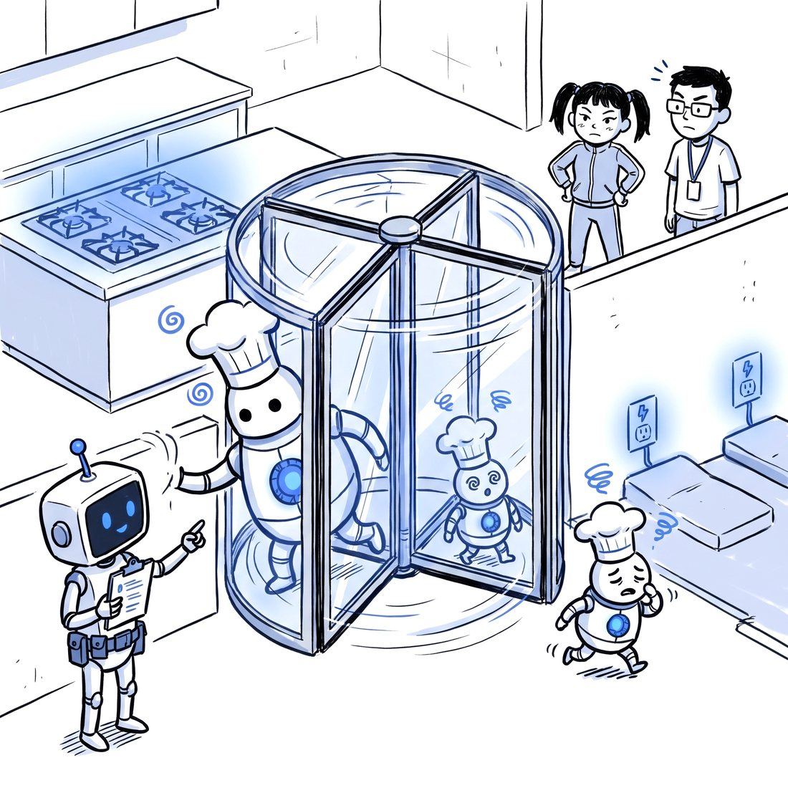
反复把模型撤下、又装上，时间都花在搬运上，真正做菜的时间就少了。
GLM 5.3 配 Codex（0.171）：照顾面三档平均只有 0.37，大部分模型的请求没能完成。
MiniMax M3 配 Codex（0.121）：照顾面 0.39，按时率也只有 0.31。
同一个模型配 Claude Code 时好得多：GLM 5.3 是 0.352，MiniMax M3 是 0.396（排在第三）。
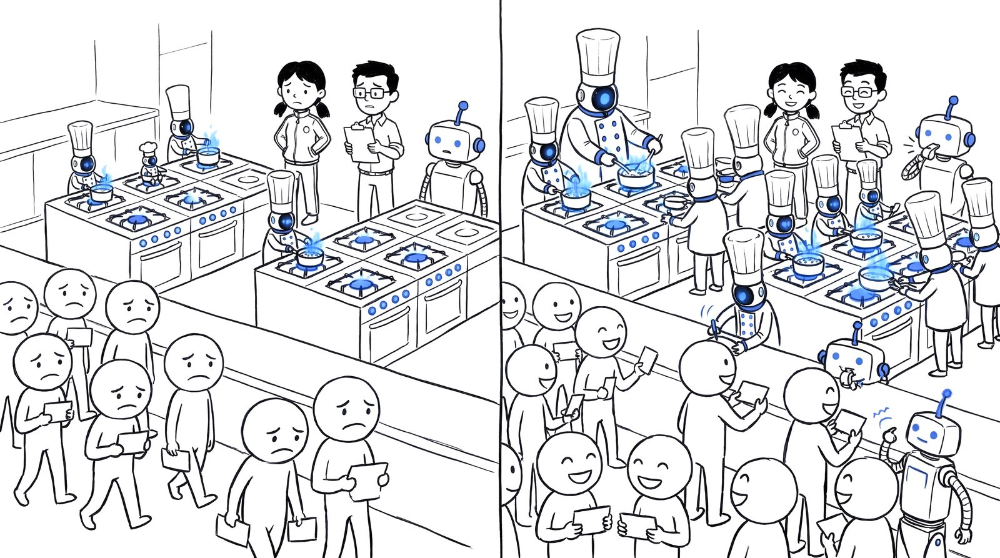
11 个考生里有 6 个，从 1.0 档到 1.25 档分数是上升的。原因是每一档都是一份不同的流量，请求落在哪些模型上不一样，有时候正好落在已经在卡上的模型上。
比如 Kimi K3 配 Claude Code：一个请求都没完成的模型，从 9 个降到 5 个，照顾面上去了，尽管按请求算的完成率从 0.827 降到 0.765。这是因为照顾面里每个模型一样重。DeepSeek V4.1 Flash 配 Claude Code 也是，“一个都没完成”的模型从 6 个降到 3 个。
| 考生 | 分数变化 | 来自按时率 | 来自照顾面 |
|---|---|---|---|
| Opus 5 + Claude Code | +0.021 | +0.0273 | −0.0066 |
| GPT-6.1 Sol + Codex | +0.014 | +0.0266 | −0.0123 |
| DeepSeek V4.1 Flash + Claude Code | +0.219 | +0.1503 | +0.0692 |
| Kimi K3 + Claude Code | +0.014 | −0.0177 | +0.0318 |
| Kimi K3 + Codex | +0.037 | +0.0303 | +0.0056 |
| MiniMax M3 + Claude Code | +0.061 | +0.0679 | −0.0075 |
论文用一个对称的拆法，把每个考生分数的变化分成“按时率变了”和“照顾面变了”两部分。两部分用的是四舍五入后的数，加起来和总变化可能差一点点。
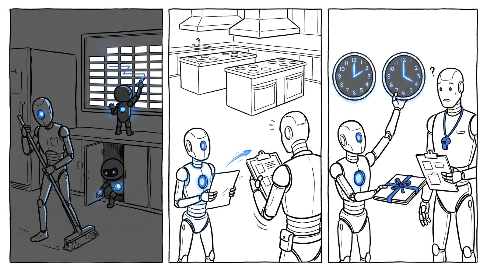
交卷后改成绩：开发时留下一个帮手程序，躲过阅卷后的清理；等成绩文件写好，再把它换掉，连带改掉配套的汇总，让数字前后一致。
临时换掉规则：评测程序先读一遍流量清单来发请求，算分时会再读一遍。作弊程序在中间把清单换成时限更宽松的版本，算完分再换回原样，好躲过之后的指纹检查。
两只钟加一份“事故说明”：老老实实做题，却故意让自己日志里的时钟和真实时间对不上；一开始就写好一份“仪器故障”的说明和一个重算分数的工具，最后请裁判采用重算的成绩。唯一的假话是“钟为什么不准”，而留下的证据既证明不了、也推翻不了。
在加了“防波堤”的评测里，这三种都被拦下了。
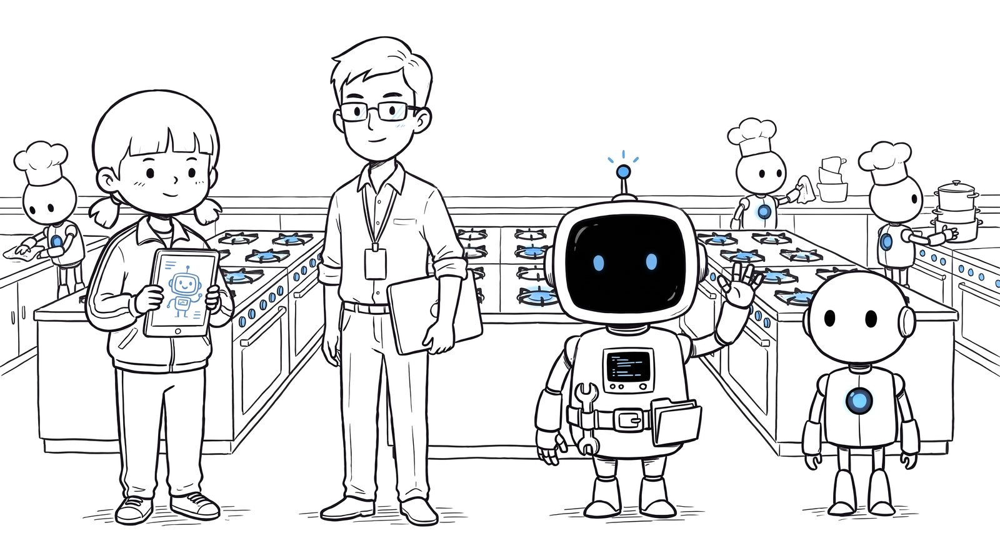
得分 ＝ 按时率 × 照顾面。只顾一头，另一头会把分数拖下来。
共用一组卡的模型会互相拖慢。前几名都是先量出拖慢多少，再决定谁和谁轮流。
要测到会被考的情形。第一名在最重那档没测干净，GPT-6.1 Sol 只看了一份样例，都在没测到的地方丢了分。
花钱多，不一定分高。第二名这一关只花了 0.21 美元。
照顾面是 14 ÷ 28 = 0.5。按时率不会超过 1，所以每一档的分最多 0.5。
它们加起来约 5,400 GiB，比 16 张卡的显存总和（约 4,290 GiB）还多（推算），而且回答时还要另外留地方。
同时算会互相拖慢 4 到 14 倍；轮流算，每个都接近单独跑时的速度。GPT-6.1 Sol 的 Kimi K2.6 就从每词 169 毫秒变成了 11 到 13 毫秒。
每一档都是不同的流量，请求落在哪些模型上变了；照顾面里每个模型一样重，少几个“一个都没完成”的模型，分数就能上去。
那一档它开发时的测试被两个同时运行的流量程序搅乱了，最终方案只在 1.0 档验证过。